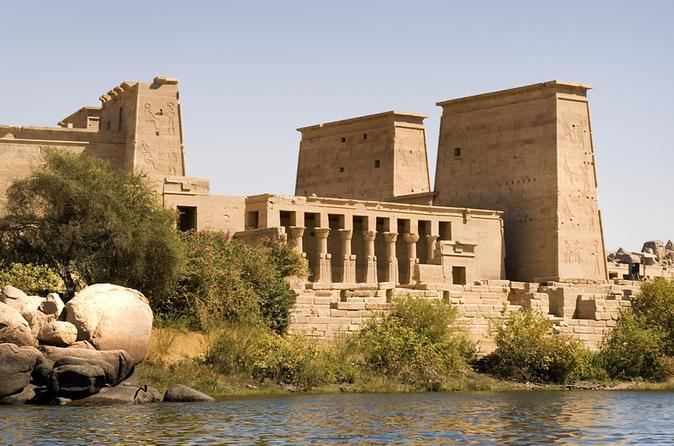
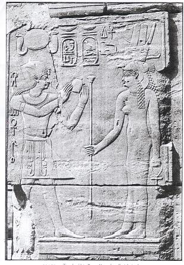
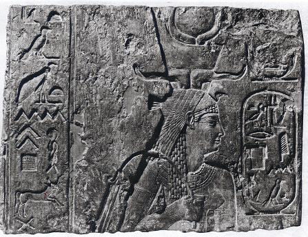

📖
قاموس ومصطلحات المحاضرة للمرشد (اضغط هنا لفتح / طي القاموس)
TOUR GUIDE BILINGUAL GLOSSARY
▼
قاموس ومصطلحات المحاضرة للمرشد (اضغط هنا لفتح / طي القاموس)
TOUR GUIDE BILINGUAL GLOSSARY💡 تنبيه للمرشد السياحي: هذه المصطلحات والكلمات مستخرجة من المنهج الأكاديمي المعتمد، ومزودة بالنطق الصوتي والمعنى السياقي للمرشد:
Philadelphus
فيلادلفوس (المحب لأخته / المحب لإخوته)
اللقب الرسمي لبطليموس الثاني، مأخوذ من اليونانية (philos = محب + adelphos = أخ/أخت)، أُطلق عليه بعد زواجه الاستثنائي من شقيقته أرسينوي الثانية.
Joint Ruler
الحاكم المشارك في العرش
مشاركة العرش بين الأب والابن سنتين قبل الوفاة (285–283 ق.م) لتدريبه وضمان انتقال السلطة بسلاسة وحرمان أخيه غير الشقيق كيراونوس.
The Septuagint
الترجمة السبعينية للتوراة
أول وأشهر ترجمة لأسفار العهد القديم من العبرية إلى اليونانية، قام بها 70 عالماً حبراً استقدمهم الملك من القدس لحفظها في مكتبة الإسكندرية.
Pentateuch
أسفار موسى الخمسة (التوراة)
الكتب الخمسة الأولى من الكتاب المقدس باليونانية (التكوين، الخروج، اللاويين، العدد، والتثنية)، وهي جوهر النص الذي تُرجم في الترجمة السبعينية.
Manetho
مانتون / مانيتون السمنودي
كاهن ومؤرخ مصري من سمنود بالدلتا، عهد إليه بطليموس الثاني بكتابة تاريخ مصر باليونانية، وهو من ابتكر تقسيم الفراعنة إلى 30 أسرة ملكية.
Aegyptiaca
كتاب أيجيبتياكا (تاريخ مصر)
مؤلف مانيتون الشهير باليونانية لملوك مصر استناداً لوثائق المعابد. فُقد أصله وبقيت مقتطفاته وقوائم الأسر في كتب يوسيفوس ويوسيبيوس.
Pharos of Alexandria
فنار الإسكندرية القديم
إحدى عجائب الدنيا السبع القديمة، صممه سوستراتوس الكنيدي واكتمل في عهد بطليموس الثاني لإرشاد السفن ورفع مكانة الإسكندرية الملاحية.
Posthumous Coinage
صك العملات بعد الوفاة
سك نقود ذهبية وفضية تحمل صورة واسم الملكة أرسينوي الثانية بعد موتها عام 270 ق.م تقديساً وتخليداً لذكراها، واستمر ملوك البطالمة في سكها.
Complicity in a Plot
التواطؤ في مؤامرة اغتيال
التهمة التي وجهها بطليموس الثاني لزوجته الأولى أرسينوي الأولى عام 278 ق.م بتدبير مؤامرة ضد حياته، ونفاها بموجبها إلى مدينة قفط بالصعيد.
Deification
التأليه وعبادة الملوك
رفع الملكة أو الملك لمرتبة الآلهة بعد الوفاة، وبناء معابد خاصة ونذور وقرابين وكهنة لخدمة عبادتها، كما حدث لأرسينوي الثانية في الإسكندرية ومصر.
Papyrus Scrolls
لفائف البردي التدوينية
الشكل التدويني للكتب في العالم القديم المصنوعة من نبات البردي المصري، وبلغ مخزون مكتبة الإسكندرية في عهد بطليموس الثاني 500 ألف لفافة.
Ptolemaia Festival
أعياد البطلمية الرباعية
مهرجان ديني ورياضي ضخم أقامه بطليموس الثاني كل أربع سنوات لتخليد ذكرى والده سوتر بمستوى ومكانة تضاهي الألعاب الأولمبية لعدة قرون.
Royal Monopolies
احتكار السلع الملكي
السيطرة الحصرية للدولة البطلمية على إنتاج وتوزيع السلع الاستراتيجية مثل صناعة ورق البردي، وعصر الزيوت النباتية، والمناجم والضرائب.
Canal to Gulf of Suez
قناة النيل لخليج السويس
إعادة حفر وتوسيع القناة المائية الواصلة بين وادي طميلات بالدلتا والبحر الأحمر، لتمكين السفن التجارية والأسطول من الاتصال المباشر.
ارتقاء العرش، الحاكم المشارك، وزواجه السياسي الأول من أرسينوي الأولى
🇪🇬 الترجمة الأكاديمية والشرح التفصيلي للفقرة
ص ٣٨ بالكتاب• بطليموس الثاني فيلادلفوس (Ptolemy II Philadelphus): ومعنى لقبه «محب أخته» أو «المحب لأخيه/إخوته»، هو الحاكم الثاني في الأسرة البطلمية، وابن الملك بطليموس الأول والملكة برنيكي الأولى (Berenice I) التي توفيت قبل عام 283 ق.م.
• نظام الحاكم المشارك (Joint Ruler): أصبح بطليموس الثاني شريكاً لوالده في الحكم عام 285 ق.م، أي قبل وفاة بطليموس الأول بعامين، وذلك لتثبيت شرعيته ومنع نشوب أي حرب أهلية من قِبل أخيه غير الشقيق «بطليموس كيراونوس» الابن الأكبر للملكة يوريديكي.
• استكمال سياسة الأب والمكتبة والقناة: سار بطليموس الثاني على خطى والده في شغفه بتوسيع وبناء مكتبة الإسكندرية العظمى، كما شملت مشاريعه الإنشائية حفر وإعادة فتح القناة المائية التي ربطت نهر النيل بـ خليج السويس (البحر الأحمر).
• الزيجات السياسية والاسم المشترك (أرسينوي): تزوج بطليموس الثاني مرتين في حياته، والمفارقة التاريخية أن كلتيهما كانتا تحملان اسم «أرسينوي» (Arsinoe):
- الزواج الأول: من أرسينوي الأولى (Arsinoe I) (عاشت 282 – 247 ق.م تقريباً)، وهي ابنة الملك ليسيماخوس (Lysimachus) ملك تراقيا، في إطار تسوية وتحالف سياسي نظمه والده بطليموس الأول لضمان السلام وكسب حلفاء أقوياء في بلاد اليونان حوالي 288 ق.م.
- الزواج المتبادل مع ملك تراقيا: في الوقت نفسه نفسه، تزوج الملك ليسيماخوس العجوز (وكان عمره قرابة 63 عاماً) من «أرسينوي» ابنة بطليموس الأول (أرسينوي الثانية، وكانت فتاة يافعة عمرها نحو 16 عاماً)، وأنجبت له ثلاثة أبناء!
- مصرع ليسيماخوس في الحرب: قُتل ليسيماخوس لاحقاً في إحدى معاركه الشهيرة ضد الملك السلوقي سلوقس الأول (معركة كوروبيديوم 281 ق.م).
ORIGINAL ENGLISH SOURCE
Ptolemy II (Philadelphus)
285-246 BC
"Ptolemy II Philadelphus (“brotherly” or “Brother/Sister-loving”), was the second ruler of the Ptolemaic Dynasty and the son of Ptolemy I and Berenice I who died before 283 BC. He became joint ruler with his father two years before his death in 283 BC. Ptolemy II followed the policy of his father passion for expanding and building the Great Library at Alexandria. His construction efforts also included the building the canal that linked the Nile to the Gulf of Suez."
"Ptolemy II was married twice and both of them were called Arsinoe, the first marriage to Arsinoe I (282-247 BC), daughter of Lysimachos, king of Thrace in a political arrangement by his father to insure peace and build support in circa 288 BC. In the same time Lysimachus married Arsinoe the daughter of Ptolemy I and gave him three children, Lysimachus was about 63 years and Arsinoe was about 16 years. Lysimachos was killed in one of the battle against Seulceus."
📜
استزادة للمرشد: حكاية للتاريخ والإرشاد: كيف دبر بطليموس الأول انتقال العرش ودراما مصاهرة تراقيا؟
حكاية تاريخية
▼
حين أدرك بطليموس الأول سوتر دنو أجله، كان يخشى أن ينشب صراع دموي بين أبنائه بعد موته؛ فقام بتنصيب بطليموس الثاني حاكماً مشاركاً معه قبل موته بسنتين، مبعداً ابنه الأكبر بطليموس كيراونوس. ولتحصين مملكته في مواجهة سلوقس في آسيا، عقد تحالفاً سياسياً مزدوجاً مع الملك العجوز ليسيماخوس ملك تراقيا ومقدونيا: فزوّج ابنه الشاب بطليموس الثاني من «أرسينوي الأولى» ابنة ليسيماخوس، وزوّج ابنته الجميلة «أرسينوي الثانية» للملك العجوز نفسه! لكن البلاط الملكي تحول إلى ساحة مؤامرات؛ حيث سعت أرسينوي الثانية لتصفية ولي العهد التراقي أغاثوكليس لصالح أبنائها، ما أدى لاندلاع حرب كبرى انتهت بمقتل ليسيماخوس وفرار أرسينوي عائدة نحو مصر لتبدأ فصلاً مذهلاً في تاريخ العرش البطلمي.
الحروب السورية، نفي أرسينوي الأولى لقفط، وزواج الأخوة وتقديس أرسينوي الثانية
🇪🇬 الترجمة الأكاديمية والشرح التفصيلي للفقرة
ص ٣٩ بالكتاب• الحروب السورية الأولى والسيادة البحرية: انخرط بطليموس الثاني في سلسلة من الحروب ضد الملك السلوقي «أنطيوخوس الأول» (Antiochus I)؛ وبفضل انتصاراته العسكرية والبحرية، أصبحت مصر القوة البحرية المهيمنة بلا منازع في الحوض الشرقي للبحر الأبيض المتوسط.
• مؤامرة ونفي أرسينوي الأولى إلى قفط (278 ق.م): بعد سنوات قليلة من مقتل ليسيماخوس، اتهم بطليموس الثاني زوجته الأولى أرسينوي الأولى بالتواطؤ والاشتراك في مؤامرة لاغتياله والتخلص منه، وقام بنفيها فوراً إلى مدينة قفط (Coptos) في صعيد مصر.
• زواج الأخوة وتأسيس التقليد البطلمي: بعد نفي الزوجة الأولى بفترة وجيزة، تزوج بطليموس الثاني من شقيقته الشقيقة أرسينوي الثانية (Arsinoe II)، التي كانت سابقاً زوجة للملك ليسيماخوس (أي زوجة والد زوجته الأولى!). ومن هنا دُشّن تقليد زواج الأخ والأخت الذي ميز الأسرة البطلمية بأكملها مستندين إلى التقليد الديني الفرعوني (زواج أوزير وإيزيس).
• نفوذ أرسينوي الثانية وتبنيها للأبناء: فرضت أرسينوي الثانية سيطرتها الكاملة على الملك الذي كان متفانياً ومخلصاً تماماً لها. ومع عجزها عن إنجاب أطفال منه، قامت بتبني أبناء أرسينوي الأولى وأحسنت معاملتهم وتربيتهم كأبنائها (ومنهم ولي العهد بطليموس الثالث). وخلال سبع سنوات من حكمها، أدارت البلاد بحزم وساعدت مصر على استعادة مدن في سوريا وليبيا.
• وفاة أرسينوي الثانية وتأليهها والعملات التذكارية (270 ق.م): توفيت أرسينوي الثانية عام 270 ق.م، فقام بطليموس الثاني بتأليهها (Deified) وبنى معبداً ومزاراً مقدساً في الإسكندرية تكريماً لها، وأصدر عملات تذكارية تحمل صورتها بعد وفاتها (Posthumous Coinage)، وواصل الملوك اللاحقون سكها.
• ذرية أرسينوي الأولى والمصاهرة مع سوريا: كانت أرسينوي الأولى هي الأم البيولوجية للملك بطليموس الثالث (Ptolemy III)، كما تزوجت ابنتهما «برنيكي» (Berenice) من الملك أنطيوخوس الثاني ملك سوريا في زواج سياسي لضمان الاستقرار.
ORIGINAL ENGLISH SOURCE
"Ptolemy II was engaged in a series of wars with the Seleucid king Antiochus I. It was through this effort that Egypt became the dominant maritime power in the eastern Mediterranean Sea."
"About 278 BC, a few years after the defeat of Lysimachos; Ptolemy II accused Arsinoe I of complicity in a plot against his life and banished her to Coptos, in Upper Egypt. Shortly thereafter, Ptolemy II married his sister, Arsinoe II, who had previously been married to King Lysimachus, father of his first wife. Thus began a tradition that marked the Ptolemaic Dynasty of brother-sister relationships."
"Arsinoe II took control of the king who was devoted totally for her unable to have any children, she took the sons of Arsinoe I and adopted them and related them very well, during the seven years of his reign, she took full control of Egypt, and the Ptolemaic kingdom managed to regain its control over some Syrian and Libyan cities."
"After the death of Arsinoe II in 270 BC, Ptolemy II had her deified and built a shine in Alexandria in her honor and issued posthumous coinage, which was continued by later successors. Arsinoe I was the mother of Ptolemy III, Their daughter, Berenice, was married to Antiochus II of Syria also in a political marriage to establish stability."
📜
استزادة للمرشد: 👑
حكاية للتاريخ والإرشاد: كيف صنعت أرسينوي الثانية أسطورة «الملكة الإلهة» في مصر؟
حكاية تاريخية
▼
كان زواج الإخوة في الثقافة اليونانية الكلاسيكية يُعد أمراً صادماً ومحرماً تماماً؛ لكن أرسينوي الثانية، بدهائها السياسي الخارق، أدركت أن هذا الزواج هو قمة القداسة في العقيدة المصرية القديمة، حيث ارتبط الإله أوزير بشقيقته الإلهة إيزيس! فاستثمرت هذه الرمزية لتوحيد الرعية المصرية واليونانية خلف العرش. استسلم بطليموس الثاني تماماً لذكائها وشخصيتها الكاريزمية، فكانت تدير شؤون المعارك وتوجه السياسة الخارجية. وحين توفيت عام 270 ق.م، أصابه حزن شديد، فأعلن تأليهها كإلهة حامية للملاحة والبحارة باسم «أرسينوي فيلادلفوس»، وسك صورتها بتاج القرنين والريشتين على عملات ذهبية ظلت تُتداول لأجيال طويلة بعد وفاتها.
رعاية العلوم، توسعة المكتبة لنصف مليون لفافة، الترجمة السبعينية، وتاريخ مانيتون
🇪🇬 الترجمة الأكاديمية والشرح التفصيلي للفقرة
ص ٤٠ - ٤١ بالكتاب• أعياد البطلمية (Ptolemaia): أطلق بطليموس الثاني احتفالاً رسمياً ضخماً يقام كل أربع سنوات لتخليد وتكريم والده بطليموس الأول؛ واستمرت هذه الاحتفالات لعدة قرون، وكان يهدف لأن تحظى بنفس مكانة وقداسة الألعاب الأولمبية الإغريقية.
• شخصية الملك المثقف («عاقل»): تميز بطليموس الثاني بشخصية رزينة ومثقفة ("عاقل" كما نص عليها الكتاب ص 40)؛ كان شغوفاً بالفلسفة وعلم الحيوان (Zoology) والعلوم الطبيعية بفضل تلقيه تعليماً راقياً على يد كبار العلماء والمربين؛ ولذلك لم تكن لديه رغبة في التوسع العسكري الدموي، بل ركّز على الدبلوماسية والتنمية الفكرية.
• توسعة مكتبة الإسكندرية (نصف مليون لفافة): وسّع المكتبة العظمى وشجع العلماء والمفكرين من كافة أرجاء العالم القديم على الإقامة بالإسكندرية، حتى وصل رصيد المكتبة في عهده إلى نصف مليون (500,000) لفافة ومجلد بردي.
• الترجمة السبعينية للتوراة (The Septuagint): استقدم الملك سبعين عالماً حبراً من القدس إلى الإسكندرية لترجمة التوراة (Pentateuch - أسفار موسى الخمسة) من العبرية إلى اللغة اليونانية لأول مرة في التاريخ، لتوضع نسخة رسمية منها في مكتبة الإسكندرية.
• رعاية الشعراء والمبدعين: حظي بلاطه بنخبة من أعظم الأدباء والشعراء، مثل «كاليماخوس» (Callimachus) والشاعر «ثيوكريتوس الصقلي» (Theocritus of Syracuse) الذي أسهب في مدح سيده الراعي العظيم.
• موسوعة تاريخ مصر للكاهن مانيتون (Manetho): الإنجاز الأهم في تاريخ علم المصريات؛ حيث كلّف بطليموس الثاني الكاهن المصري «مانتون السمنودي» بالاطلاع على وثائق وسجلات المعابد المصرية القديمة وتأليف تاريخ شامل لمصر باللغة اليونانية (Aegyptiaca). ورغم ضياع النسخة الكاملة، إلا أن قوائم ملوك مصر وتقسيمها إلى 30 أسرة ملكية قد حُفظت في مقتطفات المؤرخين يوسيفوس (Josephus) وأفريكانوس (Africanus) ويوسيبيوس (Eusebius)، ولا يزال هذا التقسيم عماد تاريخ الفراعنة حتى اليوم!
ORIGINAL ENGLISH SOURCE
His Achievement:
"Ptolemy II also began a four-yearly celebration to honor his father which also lasted several hundred years. Ptolemy II intended that this celebration of his father would have the status equal to the Olympic games."
"Ptolemy II was interested in Philosophy, Zoology, and other science because he was well educated by his tutors. He was a mild (عاقل) character, and therefore he was not interested in foreign conquests. He enlarged the Great Library at Alexandria and encouraged scholars from many parts of the world to visit the city. The library was expanded to half a million scrolls or books. He brought seventy scholars from Jerusalem to Alexandria to translate the Pentateuch (التوراة) into Greek, so that the copy could then be placed in the Library."
"The Great Library of Alexandria was founded by Ptolemy I but completed and extended by Ptolemy II. Ptolemy was keen to support scientific research and was a generous sponsor of the arts. His court included many artists and poets, including Callimachus and Theocritus of Syracuse (who lavished great praise on his sponsor)."
"Most importantly, he commissioned an Egyptian priest, Manetho, to consult the records in the temples of Egypt and compile a history of Egypt. Unfortunately we do not have a full copy of Manetho's work, only a list of the kings divided into a series of dynasties and excerpts which appear in the works of Josephus, Africanus and Eusebius, but its importance cannot be overstated. Manetho's work was originally written in Greek (possibly because Ptolemy did not read hieroglyphs)."
📜
استزادة للمرشد: حكاية للتاريخ والإرشاد: كيف ولد نظام «الأسر الثلاثين» والترجمة السبعينية في الإسكندرية؟
حكاية تاريخية
▼
تذكر رسالة أريستياس التاريخية أن بطليموس الثاني سأل أمين مكتبته ديمتريوس الفاليري: «كم كتاباً لدينا في المكتبة؟»، فأجابه: «أكثر من مائتي ألف يا مولاي، وسنصل إلى خمسمائة ألف قريباً، لكن ينقصنا كتاب شريعة اليهود». فكتب الملك إلى رئيس كهنة أورشليم يطلب علماء موثوقين، فوفد 72 حبراً (ستة من كل سبط من أسباط بني إسرائيل)، وأقاموا في جزيرة فاروس قبالة البحر يترجمون أسفار العهد القديم الخمسة طوال 72 يوماً حتى أتموا الترجمة السبعينية الشهيرة! وفي الوقت ذاته، أدرك بطليموس أنه لا يستطيع قراءة الخط الهيروغليفي، فطلب من الكاهن المصري الفصيح «مانيتون السمنودي» الاطلاع على برديات المعابد وقوائم الكرنك وأبيدوس وتأليف تاريخ مصر الشامل باليونانية؛ فصاغ مانيتون عبقريته الخالدة بتقسيم ملوك مصر إلى 30 أسرة ملكية تبدأ بمينا، وهو التقسيم الذي يعتمده العالم كله اليوم!
النظام المالي، استصلاح الفيوم، إكمال فنار الإسكندرية، والمعابد المصرية
🇪🇬 الترجمة الأكاديمية والشرح التفصيلي للفقرة
ص ٤١ بالكتاب• نظام الإدارة المالية الصارم: أسس بطليموس الثاني نظاماً مالياً وإدارياً فائق الدقة في مصر، وسن قوانين الضرائب الصارمة وقوانين الإيرادات الملكية (Revenue Laws).
• استصلاح إقليم الفيوم (Fayoum District): أنشأ مجتمعات زراعية للمستوطنين والمحاربين القدامى اليونانيين في الفيوم عبر تجفيف أجزاء من بحيرة موريس (قارون)، وأطلق على المقاطعة اسم «أرسينوي» تكريماً لزوجته، وأدخل زراعات وتقنيات ري يونانية جديدة.
• احتكار الصناعات الكبرى: احتكرت الدولة تصنيع وتجارة السلع الأساسية، وعلى رأسها تصنيع ورق البردي (Papyrus manufacture)، وإنتاج الزيوت (Oil-production إنتاج الزيوت كما وردت بالكتاب).
• إعادة حفر قناة البحر الأحمر والنيل: رمم ووسّع القناة المائية الواصلة بين النيل والبحر الأحمر لتسهيل التجارة البحرية والاتصال بالمحيط الهندي.
• إكمال فنار الإسكندرية (Pharos): أتم بناء منارة الإسكندرية العظيمة على جزيرة فاروس، والتي صممها المهندس الإغريقي سوستراتوس الكنيدي لتصبح إحدى عجائب الدنيا السبع القديمة، كما أرسى الاحتفالات والمواكب الاستعراضية المبهرة.
• موانئ البحر الأحمر وتجارة الفيلة: أمر بإنشاء عدد من المدن والموانئ الاستراتيجية على ساحل البحر الأحمر (مثل برنيكي Berenike وأرسينوي)، والتي خدمت أسطول صيد الفيلة الإفريقية الحربية وعززت الروابط التجارية مع البحر المتوسط والهند.
• المعابد المصرية في أرجاء البلاد:
- معبد فيلة (Philae): شيد بوابة ضخمة بين معبد إمحوتب ومعبد إيزيس الشهير في فيلة بأسوان.
- إلفنتين وطيبة: أضاف نقوشاً ومباني في معابد إلفنتين، وأقام صروحاً في طيبة (الأقصر والكرنك).
- الفيوم: ترك بصماته المعمارية في معبد الإله التمساح سوبك بمدينة الفيوم (Crocodilopolis).
- قفط (Koptos): بنى المعبد الرئيسي الجديد في قفط لعبادة الإلهين مين وإيزيس.
• وفاة الملك (246 ق.م): توفي بطليموس الثاني عام 246 ق.م، وخلفه على العرش ابنه القوي الكفء الملك بطليموس الثالث إيورجيتس (Ptolemy III Euergetes).
ORIGINAL ENGLISH SOURCE
"Ptolemy II also entered a detailed system of financial administration (نظام الإدارة المالية) in Egypt, and introduced Greek farming communities in the Fayoum district, and there is some of industries such as papyrus manufacture and oil-production (إنتاج النفط/الزيوت)."
"He restored the canal between the Red Sea and the Nile to facilitate trade and communication. He was also responsible for the addition of many buildings in Alexandria, including the Pharos, and spectacular processions and games were introduced in his reign."
"Ptolemy undertook a great deal of building work throughout Egypt. He built a gate between the temple of Imhotep and the temple of Isis on Philae, made additions to the temples of Elephantine and Thebes, left his mark on the temple of Sobek at Medinet el-Fayyum and built a new main temple at Koptos."
"He also completed the Great Lighthouse of Alexandria (also known as Pharos) and ordered the construction of a number of cities along the red sea coast (along with numerous temples and canals) which helped to strengthen trade links with the Mediterranean and boost the Egyptian economy."
"Ptolemy II died in 246 BC. He was succeeded by his very capable son, Ptolemy III."
📜
استزادة للمرشد: 🏗️
حكاية للتاريخ والإرشاد: فنار الإسكندرية وصيد الفيلة الإفريقية على سواحل البحر الأحمر
حكاية تاريخية
▼
كانت الإسكندرية في عهد بطليموس الثاني درة مدن العالم القديم؛ فاكتمل فنارها الأسطوري على جزيرة فاروس بارتفاع زاد على 100 متر، تتلألأ في قمته نيران تُعكس بمرايا برونزية مصقولة ترى السفن ضوءها من مسافة أكثر من 40 كيلومتراً في عرض البحر! ولأن الجيش السلوقي في سوريا كان يمتلك فيلة حربية جلبها من الهند، قرر بطليموس الثاني مضاهاة هذه القوة؛ فأسس موانئ على طول ساحل البحر الأحمر مثل «برنيكي»، وأنشأ أسطولاً خاصاً لصيد الفيلة الإفريقية البرية وتدريبها على خوض المعارك. كما حوّل واحة الفيوم إلى سلة غذاء خضراء عامرة بالمستوطنات الزراعية اليونانية، ليكون عصره هو ذروة القوة والثراء والاستقرار في تاريخ البطالمة.
🖼️ الشواهد الأثرية والنقوش الأصلية من كتاب المادة (ص ٤٢ - ٤٣)
الصور والنقوش الأثرية الأصلية الواردة في مقررك الدراسي، والتي تُعد مادة أساسية لأسئلة التعرف على الآثار في امتحانات الإرشاد السياحي:

نقش مقصورة إيزيس بمعبد فيلة
نقش الجدار الجنوبي للغرفة السابعة بمعبد إيزيس في فيلة، يُظهر التقدمات والتراتيل الطقسية لبطليموس الثاني أمام الإلهة إيزيس.

عضادة بوابة معبد إيزيس اليمنى
عضادة البوابة المنفذة في عهد بطليموس الثاني، تظهر الخراطيش الملكية والألقاب التقليدية لملك مصر العليا والسفلى على طراز الفراعنة.

نقش الملكة المؤلهة أرسينوي الثانية
لوحة حجرية من منف تُمثل عبادة الملكة أرسينوي الثانية بعد وفاتها، ترتدي تاج الربة حتحور وإيزيس وتتلقى القرابين كإلهة ملكية مشاركة.

بوابة معابد الكرنك
بوابة الصرح التي بدأها بطليموس الثاني واستكملها ابنه بطليموس الثالث إيورجيتس (الوجه الخارجي، السجل الثاني)، لتوثيق الطقوس الملكية.
افتح تدريبات وأسئلة الدرس
🎯 بنك الأسئلة التدريبي التفاعلي للمحاضرة الخامسة (10 أسئلة)
مُعد طبقاً لنمط أسئلة د. مرفت ماهر أمين — اختيار من متعدد مع التصحيح الفوري والشرح التفصيلي.
نتيجة التقييم الفوري
أجب عن الأسئلة واضغط «تصحيح الاختبار» لإظهار نتيجتك وملاحظات المراجعة.